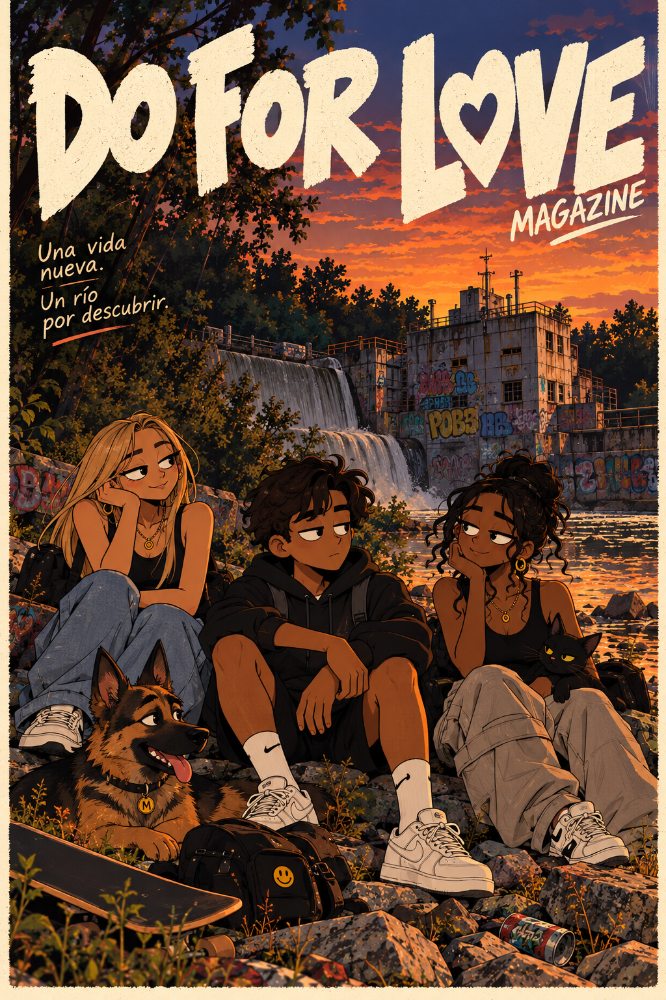
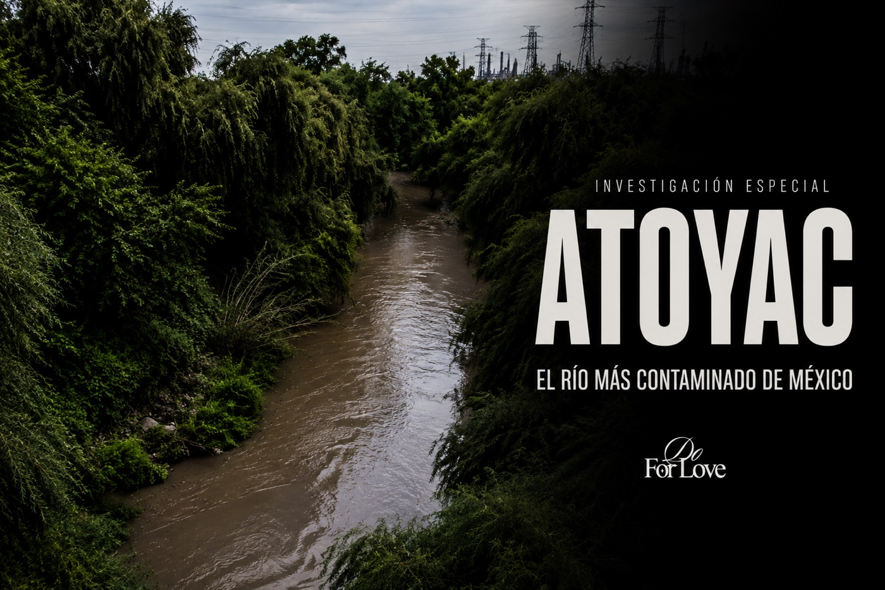

The story
A world of original characters inspired by real experiences and the history of real places.
Preview availableRead the previewEnglish reading edition · Cover artwork retains its original Spanish lettering.
Skip to content
It begins with a house, a smell that interrupts the night, and a building across the river. A story in the making about life in Puebla.
READ THE PREVIEW Explore the issueRead for free · Cover and five illustrated pages.
The full issue is in development.

Illustrated cover · Atoyac, issue 001. Story in development.
A world of original characters inspired by real experiences and the history of real places.
Preview availableRead the previewBehind every discovery: documents, sources, and questions about the river and the city.
Dossier in developmentExplore the researchArchitecture, observation, and future community initiatives to connect the stories we tell with the things we do.
First activity to be announcedDiscover the place
We explore the Atoyac through water, architecture, and everyday life. The dossier is in development. Chapters will include their sources, with clear distinctions between facts, personal accounts, and fiction.
Read the researchLa Carmelita is our starting point for exploring the relationship between the Atoyac, industrial architecture, and the surrounding city.
We are gathering documents and defining our research questions. Our first community activity has not yet been scheduled or opened for participation.
MEET DO FOR LOVEWe look at how buildings, infrastructure, and public spaces shape our relationship with the river. This perspective will accompany the story from the beginning.
It will be fiction inspired by personal experiences and documented events. Recreations will be identified, and historical and environmental facts will include sources.
When an activity is organized, we will share its purpose, location, date, and how to take part here. For now, we are developing the project.
Experience a story. Understand a place. Do something for it.